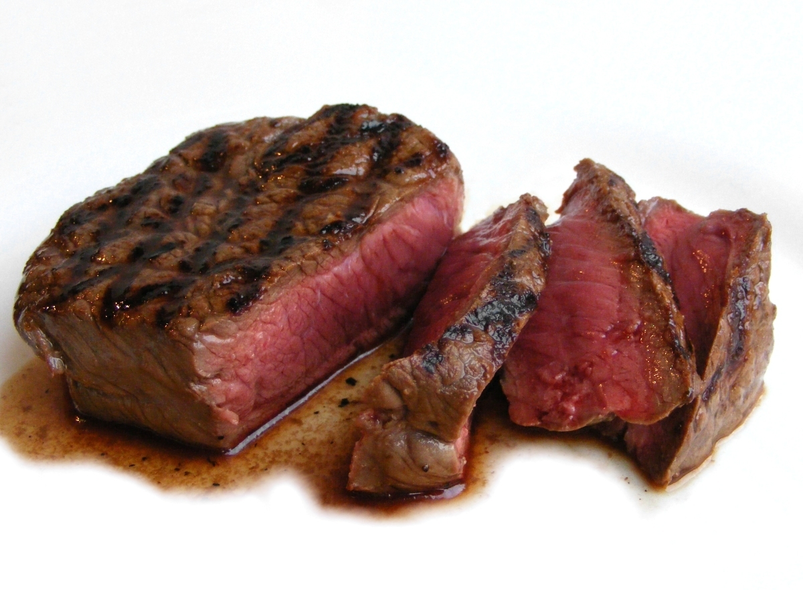

World's Best Steak

Description
Steak is a staple in any household. It's one of our favorites and a regular go-to when we're feeling lazy and don't want to cook.
I recommend getting them from Costco. They sell huge steaks you can cut in half to double what you take home.
Ingredients you will need:
- Any cut of Steak
- Salt
- Pepper
- Garlic Powder
- Onion Powder
- Butter
- Thyme
Step-By-Step
- Cooking a Steak actually starts the night before. Salt your steak and leave it in the fridge overnight. This is called 'Dry Brining'. It sucks the moisture out of the meat and will allow for a better crust when cooking.
- After 24 hours in the fridge, pull your steak out and let it rest.
- While it is resting, heat up a pan on high heat. Also add oil to the pan.
- Once your steak is back to room temp, put it into the pan facing away from you.
- I usually cook for 4-5 minutes each side flipping once.
- After your have flipped it, add butter, thyme, and garlic into the pan.
- Once the butter has melted, begin basting the steak. This will allow for a juicer cut of meat once cooking is complete.
- Once your internal temperature htis 135, you're done!
Congrats! You've just finished your steak. Enjoy!